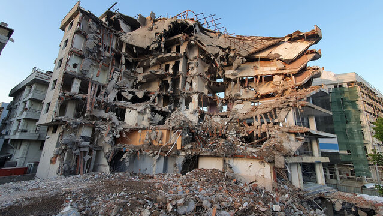
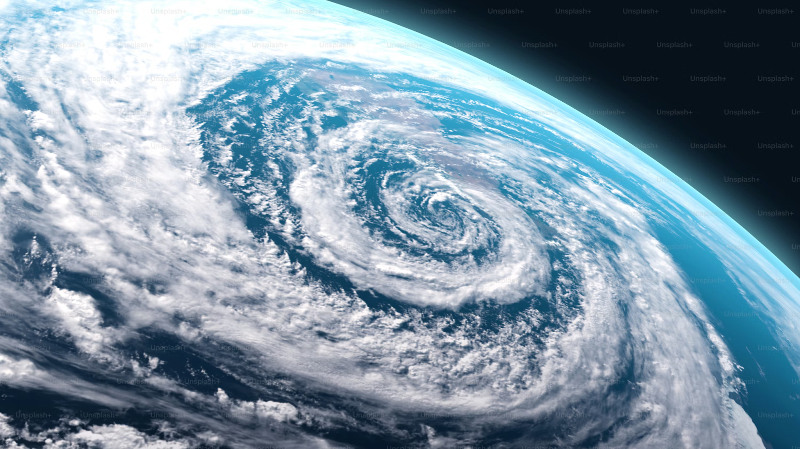

Who needs the most help
- People living in poverty
- People in unsafe housing (slums, flood zones, etc.)
- Farmers who depend on weather
- Women, kids, older people, people with disabilities
- Migrants, refugees, Indigenous groups

How to build resilience
- Give people safety nets, cash helps when disasters happen
- Social protection like food programs, pensions, etc.
- This stops families from falling deeper into poverty.
- Insurance for crops, homes, or jobs
- Keep people out of danger zones, build safer houses
- Help people earn money in safer ways.
- Teach farmers how to deal with droughts or floods
- Help people start small businesses
- Give access to loans and markets
- If one job fails, they have backup options

How does the UN check progress?
They look at things like:
- How many people die or are affected by disasters?
- How much money do countries lose from disasters?
- Whether countries have disaster‑preparedness plans?
Research
- Over 3.3–3.6 billion people live in places highly vulnerable to climate change (IPCC, 2022).
- 90% of disaster‑related deaths occur in low‑ and middle‑income countries (UNDRR, 2023).
- From 2000–2019, disasters affected 4 billion people and caused $2.97 trillion in economic losses (UNDRR).
- People living in poverty are up to 7 times more likely to die in disasters than wealthy populations.
- 1 in 3 urban residents in developing countries lives in slums or unsafe housing, increasing risk during floods and storms.
- Climate‑related disasters (floods, storms, droughts) have increased by 83% in the last 20 years.
- Floods alone affected 1.65 billion people between 2000–2019.
- In 2022, disasters caused $275 billion in global economic losses (Swiss Re Institute).
- Low‑income countries lose a larger share of their economy, sometimes over 10% of GDP from a single disaster.
Global Impact
Poverty + Vulnerability
Climate‑Related Disasters
Economic Losses

Assistance
We can help vulnerable communities by giving them the support they need before, during, and after disasters. This includes providing emergency supplies like food, clean water, blankets, and medical care right away so people can stay safe. We can also raise money to help families rebuild their homes, replace lost belongings, and restart their jobs or small businesses. Another way to help is by rebuilding schools, hospitals, and roads so the community can return to normal. We can also teach people safety skills, help farmers recover their crops, and make sure everyone has support until they can fully recover. Basically, assistance means giving people what they need to survive the disaster and helping them rebuild their lives afterward.